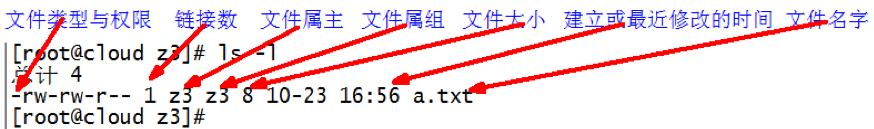

帮助命令
man获得帮助信息
- 基本语法
man[命令或配置文件] - 显示说明
| 信息 | 描述 |
|---|---|
| NAME | 命令的名称和单行描述 |
| SYNOPSIS | 怎样使用命令 |
| DESCRIPTION | 命令功能的具体描述 |
| EXAMPLES | 使用命令的例子 |
| SEE ALSO | 相关主题（通常是手册页） |
- 案例实践
1 | man ls #查看ls命令的帮助信息 |
help 获得shell内置命令的帮助信息
- 基本语法
help[命令] - 案例实践
1
help cd #查看cd命令的帮助信息
常用快捷键
| 快捷键 | 描述 |
|---|---|
| ctrl + c | 停止进程 |
| ctrl + l | 清屏； |
| ctrl + q | 退出 |
| tab | 命令补全 |
| 上下键 | 查找执行过的命令 |
关机重启命令
在linux领域内大多用在服务器上，很少遇到关机的操作。毕竟服务器上跑一个服务是永无止境的，除非特殊情况下，不得已才会关机。正确的关机流程为：sync > shutdown > reboot > halt
基本语法
sync（功能描述：将数据由内存同步到硬盘中）halt（功能描述：关闭系统，等同于shutdown -h now 和 poweroff）reboot功能描述：就是重启，等同于 shutdown -r now）shutdown[选项] [参数]
| 选项 | 功能 | - | 参数 | 功能 |
|---|---|---|---|---|
| -h | -h=halt关机 | now | 立刻关机 | |
| -r | -r=reboot重启 | 时间 | 等待多久后关机（时间单位是分钟） |
Linux系统中为了提高磁盘的读写效率，对磁盘采取了 “预读迟写”操作方式。当用户保存文件时，Linux核心并不一定立即将保存数据写入物理磁盘中，而是将数据保存在缓冲区中，等缓冲区满时再写入磁盘，这种方式可以极大的提高磁盘写入数据的效率。但是，也带来了安全隐患，如果数据还未写入磁盘时，系统掉电或者其他严重问题出现，则将导致数据丢失。使用sync指令可以立即将缓冲区的数据写入磁盘。
案例实践
1 | sync #将数据由内存同步到硬盘中 |
文件目录类
pwd 显示当前工作目录的绝对路径
- 基本语法
pwd - 案例实践
1 | cd /root #进入目录 |
ls 列出目录的内容
- 基本语法
ls[选项] [目录或文件] - 常用选项说明
| 选项 | 备注 |
|---|---|
| -a | 全部文件，包括隐藏的文件一起列举出来 |
| -l | 使用较长格式列出信息 |
- 使用-l参数显示说明
每行列出的信息一次是：文件类型与权限、链接数、文件属主、文件属组、文件大小、建立或修改时间、名字 - 案例实践
1 | ls -al # 查看当前目录的所有内容信息 |
cd 切换目录
- 基本语法
cd[参数] - 常用参数说明
| 参数 | 说明 |
|---|---|
| cd 绝对路径 | 切换路径 |
| cd 相对路径 | 切换路径 |
| cd ~或 cd | 回到自己的家目录 |
| cd - | 回到上一次所在的目录 |
| cd .. | 回到当前目录的上一级目录 |
| cd -P | 跳转到实际物理路径，而非快捷方式路径 |
- 案例实践
1 | # 假设当前用户是root |
mkdir 创建一个新的目录
- 基本语法
mkdir[选项] 要创建的目录 - 常用选项说明
| 选项 | 备注 |
|---|---|
| -p | 创建多层目录 |
- 案例实践
1 | # 假设当前用户是root |
rmdir 删除一个空的目录
- 基本语法
rmdir要删除的空目录 - 案例实践
1 | # 假设当前用户是root |
touch 创建空的文件
- 基本语法
touch 文件名称 - 案例实践
1 | cd ~ #回到自己的家目录 |
cp 复制文件或目录
基本语法
cp[选项] source dest （复制source到dest）tips：强制覆盖不提示的方法：
\cp常用选项说明
| 选项 | 备注 |
|---|---|
| -r | 递归复制整个文件夹 |
- 参数说明
| 参数 | 备注 |
|---|---|
| source | 源文件 |
| dest | 目标文件 |
- 案例实践
1 | cd ~ #回到自己的家目录 |
rm 移除文件或目录
- 基本语法
rm[选项] 需要删除的文件或目录 - 选项说明
| 选项 | 备注 |
|---|---|
| -r | 递归删除目录中的所有内容 |
| -f | 强制执行删除操作，而不提示用于进行确认 |
| -v | 显示执行的详细执行过程 |
- 案例实践
1 | cd ~ #回到自己的家目录 |
mv 移动文件或目录和重命名文件或目录
基本语法
mv[选项] 源文件 目标文件 (重命名)mv[选项] 源文件 目录 (移动文件)mv[选项] 目录 源文件 (移动文件)选项说明
| 选项 | 备注 |
|---|---|
| -f | 覆盖前不询问 |
| -v | 显示执行的详细执行过程 |
- 案例实践
1 | cd ~ #回到自己的家目录 |
cat 查看文件内容
基本语法
cat[选项] 要查看的文件查看文件内容，从第一行开始显示，一般查看比较小的文件
选项说明
| 选项 | 备注 |
|---|---|
| -n | 显示所有行的行号，包括空行 |
- 案例实践
1 | cd ~ #回到自己的家目录 |
more 文件内容分屏查看
基本语法
more要查看的文件more指令是一个基于VI编辑器的文本过滤器，它以全屏幕的方式按页显示文本文件的内容。more指令中内置了若干快捷键，详见常用操作说明。
常用操作说明
| 操作 | 备注 |
|---|---|
| 空白键 | 向下翻一页 |
| Enter | 向下翻一行 |
| q | 离开more，不在显示该文件的内容 |
| ctrl + F | 向下滚动一屏 |
| ctrl + B | 返回上一屏 |
| = | 输出当前行的行号 |
| :f | 输出文件名和当前的行号 |
- 案例实践
1 | cd ~ #回到自己的家目录 |
less 分屏显示文件内容
基本语法
less要查看的文件less指令用来分屏查看文件内容，它的功能与more指令类似，但是比more指令更加强大，支持各种显示终端。less指令在显示文件内容时，并不是一次将整个文件加载之后才显示，而是根据显示需要加载内容，对于显示大型文件具有较高的效率。
常用操作说明
| 操作 | 备注 |
|---|---|
| 空白键 | 向下一页 |
| q | 离开less，不在显示该文件的内容 |
| [pagedown] | 向下翻一屏 |
| [pageup] | 向上翻一屏 |
| /字符串 | 向下搜索字符串的功能；n：向下查找；N：向上查找 |
| ?字符串 | 向上搜索字符串的功能；n：向上查找；N：向下查找 |
- 案例实践
1 | cd ~ #回到自己的家目录 |
echo 输出内容
基本语法
echo[选项] [输出内容]选项
| 选项 | 备注 |
|---|---|
| -e | 支持反斜线控制的字符转换 |
- 案例实践
1 | echo "hello\twrorld" |
head 显示文件头部内容
基本语法
head[选项] 文件head用于显示文件的开头部分内容，默认情况下head指令显示文件的前10行内容。
选项
| 选项 | 备注 |
|---|---|
| -n <行数> | 指定显示头部内容的n行内容 |
- 案例实践
1 | cd ~ |
tail 显示文件尾部内容
基本语法
tail[选项] 文件tail用于显示文件的开头部分内容，默认情况下tail指令显示文件的后10行内容。
选项
| 选项 | 备注 |
|---|---|
| -n <行数> | 指定显示尾部内容的n行内容 |
| -f | 显示文件最新追加的内容监听文件变化 |
- 案例实践
1 | cd ~ |
> 输出重定向和 >> 追加
基本语法
ls -al > 文件将列表的内容写入到具体的文件中（覆盖写）ls -al >> 文件将列表的内容追加到具体的文件的末尾案例实践
1 | cd ~ |
ln 软连接
基本语法
ls -s[原文件或目录] [软连接名]软链接也成为符号链接，类似于windows里的快捷方式，有自己的数据块，主要存放了链接其他文件的路径。
删除软链接：rm -rf 软链接名，而不是rm -rf 软链接名/
查询：通过ls -al就可以查看，列表属性第1位是l，尾部会有位置指向。案例实践
1 | cd ~ |
history 查看执行命令历史
- 基本语法
history - 案例实践
1 | history #查看已经执行过的历史命令 |
时间日期类
date时间类
- 基本语法
date[选项] [+格式] - 常用选项说明
| 选项 | 备注 |
|---|---|
| -d <时间字符串> | 显示指定的“时间字符串”表示的时间，而非当前时间 |
| -s <时间日期> | 设置系统日期时间 |
- 常用格式说明
| 格式 | 备注 |
|---|---|
| +%Y | 年份 |
| +%m | 月份 |
| +%d | 天 |
| +%H | 时 |
| +%M | 分 |
| +%S | 秒 |
- 案例实践
1 | date #显示当前时间 |
cal日期类
- 基本语法
cal[选项]不加选项，默认显示本月日历
- 常用选项说明
| 选项 | 备注 |
|---|---|
| 具体某一年 | 显示这一年的日历 |
- 案例实践
1 | cal #查看当月的日历 |
用户管理命令
useradd 添加新用户
基本语法
useradd[选项] 用户名在没有指定
-d选项的情况下,系统默认会在’/home’目录下创建和用户同名的家目录常用选项说明
| 选项 | 备注 |
|---|---|
| -g 组名 | 添加新用户到指定的组 |
| -d 指定家目录 | 添加新用户到指定的家目录，需要注意的是，指定的家目录尽量是不存在的，不然会出现错误警告 |
- 案例实践
1 | useradd yatu #添加新用户yatu |
passwd 设置用户密码
基本语法
passwd用户名案例实践
1 | passwd yatu #设置用户密码 |
usermod 修改用户
基本语法
usermod[选项] 用户名常用选项说明
| 选项 | 备注 |
|---|---|
| -g | 修改用户的吃书登录组，给定的组必须存在 |
| -d 指定家目录 | 添加用户到指定的家目录 |
- 案例实践
1 | usermod -g root yatu |
userdel 删除用户
基本语法
userdel[选项] 用户名在不指定
-r选项的时候，默认是保留家目录的常用选项说明
| 选项 | 备注 |
|---|---|
| -r | 删除用户，不保留家目录 |
- 案例实践
1 | userdel -r yatu #删除用户，且不保留家目录 |
id 查看用户是否存在
基本语法
id用户名当用户不存在的时候，返回无此用户提示，否则返回
用户id、所在组的id和组名案例实践
1 | id yatu #查看用户是否存在 |
su 切换用户
基本语法
su- 需要切换的用户名在操作的过程中，如果当前用户的权限不够，可以通过
su -指令，切换到高权限用户；
从权限搞的用户切换到权限低的用户时，不需要输入密码，反之需要；
若需要返回到原来用户时，使用exit命令即可；
需要注意的是，如果su -中去掉-，切换过去的时候，不能获取该用户的华宁变量及执行权限案例实践
1 | su - yatu #切换到yatu用户 |
who am i和whoami 查询当前用户信息
基本语法
whoami（显示自身用户名称）who am i（显示登录用户的用户名）案例实践
1 | whoami #显示自身用户名称 |
sudo 设置普通用户具有root权限
以root身份添加yatus用户，并对其设置密码
1
2useradd yatus #新增yauts
passwd yatus #设置yauts登录密码需改配置文件
1
2
3
4
5
6
7
8
9# 修改/etc/sudoers文件，找到100行，在root下面添加一行，如下所示：
## Allow root to run any commands anywhere
root ALL=(ALL) ALL
yatus ALL=(ALL) ALL
# 或者配置成采用sudo命令时，不需要输入密码
## Allow root to run any commands anywhere
root ALL=(ALL) ALL
yatus ALL=(ALL) NOPASSWD:ALL
#修改完毕，就可以使用yatu账号登录，使用命令sudo，即可获得root的权限进行操作
用户组管理命令
用户组类似于角色，每个用户都有一个用户组，系统可以对一个用户组中的所有用户进行集中管理。不同linux系统对用户组的规定有所不同，
如linux下的用户属于与它同名的用户组，这个用户组在创建用户时同时创建。用户组的管理涉及用户组的添加、删除和修改。组的增加、删除和修改实际上就是对/etc/group文件的更新。
groupadd 新增用户组
基本语法
groupadd组名案例实践
1 | groupadd test #添加一个test组 |
groupdel 删除用户组
基本语法
groupdel组名案例实践
1 | groupdel test #删除test组 |
groupmod 修改用户组
基本语法
groupmod-n 新组名 老组名案例实践
1 | groupadd xjl #新建组 |
用户和组的相关文件
/etc/passwd 文件
用户(user)的配置文件，记录用户的各种信息；
每行的含义是：用户名:口令:用户标志号:组标志号:注释性描述:主目录:登录shell
1 | # 查看/etc/passwd文件，root用户的信息 |
/etc/shadow 文件
口令的配置文件；
每行的含义是：登录名:加密口令:最后一次修改时间:最小时间间隔:最大时间间隔:警告时间:不活动时间:失效时间:标志
1 | # 查看/etc/shadow文件，root用户的信息 |
/etc/group 文件
组(group)的配置文件，记录linux包含的组的信息
每行的含义是：组名:口令:组标志号:组内用户列表
1 | # 查看/etc/group文件，root用户的信息 |
搜索查找类
find 查找文件或者目录
find指令将从指定目录向下递归地遍历其各个子目录，将满足条件的文件显示在终端。
- 基本语法
find[搜索范围] [选项] - 常用选项说明
| 选项 | 备注 |
|---|---|
| -name<查询方式> | 按照指定的文件名查找模式查找文件 |
| -user<用户名> | 查找属于指定用户名所有文件 |
| -size<文件大小> | 按照指定文件大小查找文件 |
- 案例实践
1 | find /root -name *.txt #根据文件名查找/root目录下的带有.txt后缀的文件 |
locate 快速定位文件路径
locate指令利用事先建立的系统中所有文件名称及路径的locate数据库实现快速定位给定的文件。Locate指令无需遍历整个文件系统，查询速度较快。为了保证查询结果的准确度，管理员必须定期更新locate。
基本语法
locate搜索文件由于locate指令基于数据库进行查询，所以第一次运行前，必须使用updatedb指令创建locate数据库
案例实践
1
2updatedb #更新locate数据库
locate tmp #查询
grep 过来查找及“|”管道符
管道符，“|”，表示将前一个命令的处理结果输出传递给后面的命令处理
- 基本语法
grep[选项] 查找内容 源文件 - 常用选项说明
| 选项 | 备注 |
|---|---|
| -n | 显示匹配行及行号 |
| -i | 忽略字母大小写 |
- 案例实践
1
cat anaconda-ks.cfg | grep -ni swap #不区分大小写查找swap在文件中哪些行
压缩和解压类
gzip和gunzip
基本语法
gzip文件 （压缩文件，只能将文件压缩成*.gz文件）gunzip文件.gz (解压缩文件)只能压缩文件,不能压缩目录;
不保留原来的文件;案例实践
1 | echo "gzip and gunzip" >> text.log # 往文件里面写入文本 |
zip和unzip
基本语法
zip[选项] xxx.zip 将要压缩的文件或目录 （压缩文件和目录）unzip[选项] xxx.zip (解压缩文件)zip常用选项说明
| 选项 | 备注 |
|---|---|
| -r | 递归压缩，压缩目录 |
- unzip常用选项说明
| 选项 | 备注 |
|---|---|
| -d | 指定解压后文件存放的目录 |
- 案例实践
1 | zip -r home.zip /home/ #压缩home目录 |
tar 打包
基本语法
tar[选项] xxx.tar.gz 将要打包进去的内容 （最后打包后的文件是.tar.gz文件）解压常用写法：
tar zxvf xxx.tar.gz -C 指定解压目录，如果指定-C参数，则指定的目录必须存在，不指定-C参数，则解压到当前目录常用选项说明
| 选项 | 备注 |
|---|---|
| -c | 产生.tar打包文件 |
| -v | 显示详细的信息 |
| -f | 指定压缩后的文件名 |
| -z | 打包同事压缩 |
| -x | 解包.tar文件 |
- 案例实践
1 | mkdir d |
文件权限类
文件属性
Linux系统是一种典型的多用户系统，不同的用户处于不同的地位，拥有不同的权限。为了保护系统的安全性，Linux系统对不同的用户访问同一文件（包括目录文件）的权限做了不同的规定。
权限简写方式，r（读，对应英文是read）、w（写，对应英文是write）、x（执行，对应英文是excute）
在Linux中ls -al命令来显示一个文件的属性以及文件所属的用户和组，如果没有权限，就会出现-。从左到右用0-9这些数字表示，如下图所示：
- 各个数字表示的类型解释
（1）第0位表示类型，代表这个文件是目录、文件或链接文件等等。其中-代表文件；d代表目录;l表示链接文档；c表示字符设备（键盘、鼠标等）；b表示块文件（硬盘）；
（2）第1-3位可以确定属主（该文件的所有者）拥有该文件的权限（所有者）；
（3）第4-6位确定属组（所有者的同组用户）拥有该文件的权限（所在组）；
（4）第7-9位确定其他用户拥有该文件的权限（其他组）。 - 一般而言，文件是谁创建的，就自然成为该文件的
所有者；默认情况下，该文件的所在组是该所有者所在的组；除了文件的所有者和所在组的用户意外，系统的其他用户都是文件的其他组。 - rwx作用文件和目录的不同解释
| 作用到文件 | 作用到目录 |
|---|---|
| r代表可读(read): 可以读取，查看 | r代表可读(read): 可以读取，ls查看目录内容 |
| w代表可写(write): 可以修改，但是不代表可以删除该文件，删除一个文件的前提条件是对该文件所在的目录有写权限，才能删除该文件 | w代表可写(write): 可以修改，目录内创建+删除+重命名目录 |
| x代表可执行(execute):可以被系统执行 | x代表可执行(execute):可以进入该目录 |
文件基本类型解释
（1）如果查看到是文件：链接数指的是硬链接个数。创建硬链接方法
ln [原文件] [目标文件]，硬链接只能作用于具体的文件上，不能作用于目录
（2）如果查看的是文件夹：链接数指的是子文件夹个数。
chmod 改变权限
权限一般也用数字表示,读（read）= 4，写（write）= 2，执行（execute）= 1，也可以是组合的形式，比如4+2+1=7就是拥有读写执行权限，4+2=6就是拥有读写权限；
对所有者、所属组、其他组也有对应的简写方式，u（所有者）、g（所在组）、o（其他人）、a（所有人，即u、g和o的总和）。
基本语法
chmod[{ugoa}{+-=}{rxw}] 文件或目录chmod[mode=421] 文件或目录案例实践
1 | # 创建hello.txt文件 |
chown 改变所有者
基本语法
chown[选项] 用户 文件或目录 （改变文件或目录的所有者）常用选项说明
| 选项 | 备注 |
|---|---|
| -R | 递归操作 |
- 案例实践
1 | # 以root身份创建ho.txt文件 |
chgrp 改变所属组
基本语法
chgrp[选项] 用户组 文件或目录 （改变文件或目录的所在组）常用选项说明
| 选项 | 备注 |
|---|---|
| -R | 递归操作 |
- 案例实践
1 | # 以root身份查询ho.txt,执行ls -al | grep ho |
磁盘分区类
df 查看磁盘空间使用情况
- 基本语法
df[选项] - 常见选项说明
| 选项 | 备注 |
|---|---|
| -h | 以热凝较易阅读的格式显示 |
- 案例实践
1 | df -h #查看磁盘使用情况 |
fdisk 查看分区
基本语法
fdisk[选项]该命令必须在root用户下才能使用
常见选项说明
| 选项 | 备注 |
|---|---|
| -l | 显示所有磁盘的分区列表 |
- 案例实践
1 | fdisk -l #查看磁盘分区情况 |
分区挂载和卸载
对于Linux用户来讲，不论有几个分区，分别分给哪一个目录使用，它总归就是一个根目录、一个独立且唯一的文件结构。
Linux中每个分区都是用来组成整个文件系统的一部分，它在用一种叫做“挂载”的处理方法，它整个文件系统中包含了一整套的文件和目录，并将一个分区和一个目录联系起来，要载入的那个分区将使它的存储空间在这个目录下获得。
基本语法
mount[-t vfstype] [-o options] device dir (挂载设备)umount设备文件名或挂载点参数说明
| 选项 | 备注 |
|---|---|
| -t vfstype | 指定文件系统的类型，通常不必指定。mount 会自动选择正确的类型。常用类型有：1）光盘或光盘镜像：iso9660；2）DOS fat16文件系统：msdos；3）Windows 9x fat32文件系统：vfat；4）Windows NT ntfs文件系统：ntfs；5）Mount Windows文件网络共享：smbfs；6）UNIX(LINUX) 文件网络共享：nfs。 |
| -o options | 主要用来描述设备或档案的挂接方式。常用的参数有：1）loop：用来把一个文件当成硬盘分区挂接上系统；2）ro：采用只读方式挂接设备；3）rw：采用读写方式挂接设备；4）iocharset：指定访问文件系统所用字符集。 |
| device | 要挂接(mount)的设备 |
| dir | 设备在系统上的挂接点(mount point) |
- 案例实践
1 | # 挂载光盘镜像文件 |
进程线程类
进程是正在执行的一个程> 进程是正在执行的一个程> 进程是正在执行的一个程序或命令，每一个进程都是一个运实体，都有自己的地址空间，并占用一定的系统资源。
ps 查看当前系统
- 基本语法
ps[选项] - 常用选项说明
| 选项 | 备注 |
|---|---|
| -a | 选择所有进程 |
| -u | 显示所有用户的进程 |
| -x | 显示没有终端的进程 |
| -e | 选择所有进程，通常配合-f使用 |
| -f | 显示完整格式列表，通常配合-e使用 |
- 功能描述
1）ps -aux显示信息说明
| 关键词 | 备注 |
|---|---|
| USER | 该进程是由哪个用户产生的 |
| PID | 进程的ID号 |
| %CPU | 该进程占用CPU资源的百分比，占用越高，进程越耗费资源； |
| %MEM | 该进程占用物理内存的百分比，占用越高，进程越耗费资源； |
| VSZ | 该进程占用虚拟内存的大小，单位KB； |
| RSS | 该进程占用实际物理内存的大小，单位KB； |
| TTY | 该进程是在哪个终端中运行的。其中tty1-tty7代表本地控制台终端，tty1-tty6是本地的字符界面终端，tty7是图形终端。pts/0-255代表虚拟终端。 |
| STAT | 进程状态。常见的状态有：R：运行、S：睡眠、T：停止状态、s：包含子进程、+：位于后台 |
| START | 该进程的启动时间 |
| TIME | 该进程占用CPU的运算时间，注意不是系统时间 |
| COMMAND | 产生此进程的命令名 |
2）ps -ef显示信息说明
| 关键词 | 备注 |
|---|---|
| UID | 用户ID |
| PID | 进程ID |
| PPID | 父进程ID |
| C | CPU用于计算执行优先级的因子。数值越大，表明进程是CPU密集型运算，执行优先级会降低；数值越小，表明进程是I/O密集型运算，执行优先级会提高 |
| STIME | 进程启动的时间 |
| TTY | 完整的终端名称 |
| TIME | CPU时间 |
| CMD | 启动进程所用的命令和参数 |
如果想查看进程的CPU占用率和内存占用率，可以使用aux;如果想查看进程的父进程ID可以使用ef;
- 案例实践
1 | # 查看进程的CPU占用率和内存占用率 |
kill 终止进程
- 基本语法
kill[选项] 进程号 (通过进程号杀死进程)killall进程名称 (通过进程名称杀死进程，也支持通配符，这在系统因负载过大而变得很慢时很有用)
- 常用选项说明
| 选项 | 备注 |
|---|---|
| -g | 表示强迫进程立即停止 |
- 案例实践
1 | # 杀死进程 |
pstree 查看进程树
- 基本语法
pstree[选项]
- 常用选项说明
| 选项 | 备注 |
|---|---|
| -p | 显示进程的PID |
| -u | 显示进程的所属用户 |
- 案例实践
1 | # 显示进程pid |
top 查看系统健康状态
- 基本语法
top[选项]
- 常用选项说明
| 选项 | 备注 |
|---|---|
| -d 秒数 | 指定top命令每隔几秒更新。默认是3秒在top命令的交互模式当中可以执行的命令 |
| -i | 使top不显示任何闲置或者僵死进程 |
| -p | 通过指定监控进程ID来仅仅监控某个进程的状态 |
- 常用操作说明
| 操作 | 备注 |
|---|---|
| P | 以CPU使用率排序，默认就是此项 |
| M | 以内存的使用率排序 |
| N | 以PID排序 |
| q | 退出top |
- 查询结果字段解释
1)第一行信息为任务队列信息
| 内容 | 备注 |
|---|---|
| 12:26:46 | 系统当前时间 |
| up 1 day, 13:32 | 系统的运行时间，本机已经运行1天13小时32分钟 |
| 2 users | 当前登录了两个用户 |
| load average: 0.00, 0.00, 0.00 | 系统在之前1分钟，5分钟，15分钟的平均负载。一般认为小于1时，负载较小。如果大于1，系统已经超出负荷 |
2)第二行是进程信息
| 内容 | 备注 |
|---|---|
| Tasks: 95 total | 系统中的进程总数 |
| 1 running | 正在运行的进程数 |
| 94 sleeping | 睡眠的进程 |
| 0 stopped | 正在停止的进程 |
| 0 zombie | 僵尸进程。如果不是0，需要手工检查僵尸进程 |
3）第三行为CPU信息
| 内容 | 备注 |
|---|---|
| Cpu(s) | 0.1%us 用户模式占用的CPU百分比 |
| 0.1%sy | 系统模式占用的CPU百分比 |
| 0.0%ni | 改变过优先级的用户进程占用的CPU百分比 |
| 99.7%id | 空闲CPU的CPU百分比 |
| 0.1%wa | 等待输入/输出的进程的占用CPU百分比 |
| 0.0%hi | 硬中断请求服务占用的CPU百分比 |
| 0.1%si | 软中断请求服务占用的CPU百分比 |
| 0.0%st | st（Steal time）虚拟时间百分比。就是当有虚拟机时，虚拟CPU等待实际CPU的时间百分比。 |
4）第四行为物理内存信息
| 内容 | 备注 |
|---|---|
| Mem | 625344k total 物理内存的总量，单位KB |
| 571504k used | 已经使用的物理内存数量 |
| 53840k free | 空闲的物理内存数量，我们使用的是虚拟机，总共只分配了628MB内存，所以只有53MB的空闲内存了 |
| 65800k buffers | 作为缓冲的内存数量 |
5）第五行为交换分区（swap）信息
| 内容 | 备注 |
|---|---|
| Swap | 524280k total 交换分区（虚拟内存）的总大小 |
| 0k used | 已经使用的交互分区的大小 |
| 524280k free | 空闲交换分区的大小 |
| 409280k cached | 作为缓存的交互分区的大小 |
netstat 显示网络统计信息和端口占用情况
基本语法
netstat-anp |grep 进程号 (查看该进程网络信息)netstat-nlp | grep 端口号（查看网络端口号占用情况）常用选项说明
| 选项 | 备注 |
|---|---|
| -n | 拒绝显示别名，能显示数字的全部转化成数字 |
| -l | 仅列出有在listen（监听）的服务状态 |
| -p | 表示显示哪个进程在调用 |
crond 系统定时任务
- 启动crond服务
service crond restart 基本语法
crontab[选项]常用选项说明
| 选项 | 备注 |
|---|---|
| -e | 编辑crontab定时任务 |
| -l | 查询crontab任务 |
| -r | 删除当前用户所有的crontab任务 |
- 参数说明
1)crontab -e会进入crontab编辑界面，会打开vim编辑器
任务格式：* * * * * 要执行的任务
| 项目 | 含义 | 范围 |
|---|---|---|
| 第一个“*” | 一小时当中的第几分钟 | 0-59 |
| 第二个“*” | 一天当中的第几小时 | 0-23 |
| 第三个“*” | 一个月当中的第几天 | 1-31 |
| 第四个“*” | 一年当中的第几月 | 1-12 |
| 第五个“*” | 一周当中的星期几 | 0-7（0和7都代表星期日） |
2) 特殊符号
| 特殊符号 | 含义 |
|---|---|
| * | 代表任何时间。比如第一个“*”就代表一小时中每分钟都执行一次的意思。 |
| ， | 代表不连续的时间。比如“0 8,12,16 * 命令”，就代表在每天的8点0分，12点0分，16点0分都执行一次命令 |
| - | 代表连续的时间范围。比如“0 5 1-6命令”，代表在周一到周六的凌晨5点0分执行命令 |
| */n | 代表每隔多久执行一次。比如“/10 * 命令”，代表每隔10分钟就执行一遍命令 |
3）特定时间执行命令
| 时间 | 含义 |
|---|---|
| 45 22 * * * 命令 | 在22点45分执行命令 |
| 0 17 * * 1 命令 | 每周1 的17点0分执行命令 |
| 0 5 1,15 * * 命令 | 每月1号和15号的凌晨5点0分执行命令 |
| 40 4 * * 1-5 命令 | 每周一到周五的凌晨4点40分执行命令 |
| */10 4 * * * 命令 | 每天的凌晨4点，每隔10分钟执行一次命令 |
| 0 0 1,15 * 1 命令 | 每月1号和15号，每周1的0点0分都会执行命令。注意：星期几和几号最好不要同时出现，因为他们定义的都是天。非常容易让管理员混乱 |
服务(service)管理
服务(service) 本质就是进程，但是是运行在后台的，通常都会监听某个端口，等待其它程序的请求，比如(mysql , sshd 防火墙等)，因此又称为守护进程。
- 基本语法
service服务名 [选项]
上述操作只是临时生效，当重启系统后，还是回归以前对服务的设置,如果希望设置某个服务自启动或关闭永久生效，要使用chkconfig指令;
在CentOS7.0后不再使用service,而是systemctl。
- 常用选项说明
| 选项 | 备注 |
|---|---|
| start | 开启服务 |
| stop | 关闭服务 |
| restart | 重新启动服务 |
| reload | 重新启动服务 |
| status | 查看服务状态 |
查看服务名
- 使用setup->系统服务，就可以看到；
- ls -al /etc/init.d/
服务的运行级别(runlevel)
Linux系统有7种运行级别(runlevel),常用的是级别3和5;
查看或者修改默认级别： vi /etc/inittab
| 运行级别 | 备注 |
|---|---|
| 运行级别0 | 系统停机状态，系统默认运行级别不能设为0，否则不能正常启动 |
| 运行级别1 | 单用户工作状态，root权限，用于系统维护，禁止远程登陆 |
| 运行级别2 | 多用户状态(没有NFS)，不支持网络 |
| 运行级别3 | 完全的多用户状态(有NFS)，登陆后进入控制台命令行模式 |
| 运行级别4 | 系统未使用，保留 |
| 运行级别5 | X11控制台，登陆后进入图形GUI模式 |
| 运行级别6 | 系统正常关闭并重启，默认运行级别不能设为6，否则不能正常启动 |
- 开机的流程说明
开机->BIOS->/boot->init进程->运行级别->运行级别对应的服务
chkconfig指令
通过chkconfig命令可以给每个服务的各个运行级别设置自启动/关闭
在CentOS7.0后不再使用chkconfig指令,而是systemctl。
- 基本语法
chkconfig–list|grep xxx (查看服务)chkconfig服务名 –list (查看指定服务)chkconfig–level 5 服务名 on/off （指定某个服务，某各个运行级别，开启或关闭）chkconfig服务名 on/off (指定关闭某个五福，不管是哪个级别都关闭)
网络相关命令
- 常用命令
ifconfig(显示所有网络接口的配置信息)ping目的主机 (测试主机之间网络连通性)
软件包管理
RPM
RPM（RedHat Package Manager），RedHat软件包管理工具，类似windows里面的setup.exe
是Linux这系列操作系统里面的打包安装工具，它虽然是RedHat的标志，但理念是通用的。
RPM包的名称格式：Apache-1.3.23-11.i386.rpm
- “apache” 软件名称
- “1.3.23-11”软件的版本号，主版本和此版本
- “i386”是软件所运行的硬件平台，Intel 32位微处理器的统称
- “rpm”文件扩展名，代表RPM包
RPM查询命令
rpm -qa(查询所安装的所有rpm软件包)RPM卸载命令
rpm -e软件包rpm -e–nodeps 软件包
选项说明
| 选项 | 备注 |
|---|---|
| -e | 卸载软件包 |
| –nodeps | 卸载软件时，不检查依赖。这样的话，那些使用该软件包的软件在此之后可能就不能正常工作了。 |
- RPM安装命令
rpm-ivh RPM包全名
选项说明
| 选项 | 备注 |
|---|---|
| -i | -i=install，安装 |
| -v | -v=verbose，显示详细信息 |
| -h | -h=hash，进度条 |
| –nodeps | –nodeps，不检测依赖进度 |
YUM
YUM（全称为 Yellow dog Updater, Modified）是一个在Fedora和RedHat以及CentOS中的Shell前端软件包管理器。基于RPM包管理，能够从指定的服务器自动下载RPM包并且安装，可以自动处理依赖性关系，并且一次安装所有依赖的软件包，无须繁琐地一次次下载、安装
基本语法
yum[选项] [参数]常用选项说明
| 选项 | 备注 |
|---|---|
| -y | 对所有提问都回答“yes” |
- 常用参数说明
| 参数 | 备注 |
|---|---|
| install | 安装rpm软件包 |
| update | 更新rpm软件包 |
| check-update | 检查是否有可用的更新rpm软件包 |
| remove | 删除指定的rpm软件包 |
| list | 显示软件包信息 |
| clean | 清理yum过期的缓存 |
| deplist | 显示yum软件包的所有依赖关系 |